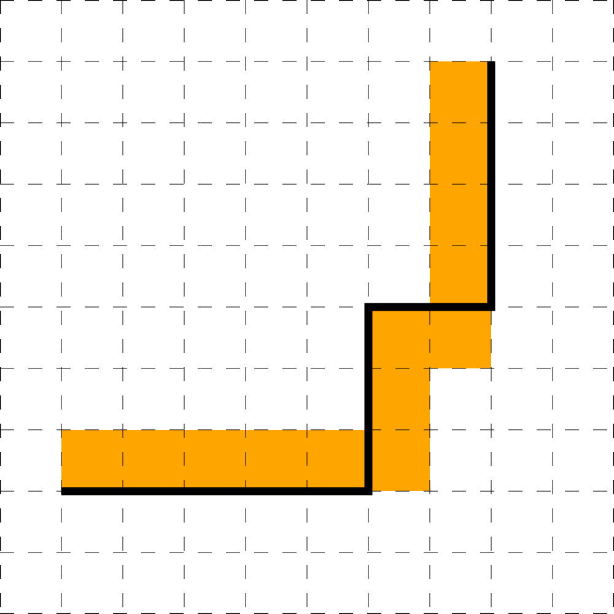

Основной государственный экзамен по ИНФОРМАТИКЕ
Инструкция по выполнению работы
Работа состоит из двух частей, включающих в себя 15 заданий. Часть 1
содержит 10 заданий с кратким ответом; часть 2 содержит 5 заданий, которые
необходимо выполнить на компьютере.
На выполнение работы по информатике отводится 2 часа 30 минут
(150 минут). Вы можете самостоятельно определять время, которое отводите
на выполнение заданий, но рекомендуемое время на выполнение заданий
части 1 – 30 минут, на выполнение заданий части 2 – 2 часа (120 минут).
Ответы к заданиям 1–12 записываются в виде числа, слова,
последовательности букв или цифр. Ответ запишите в поле ответа в тексте
работы, а затем перенесите в бланк ответов № 1.
Результатом выполнения каждого из заданий 13–15 является отдельный
файл. Формат файла, его имя и каталог для сохранения Вам сообщат
организаторы.
Все бланки заполняются яркими чёрными чернилами. Допускается
использование гелевой или капиллярной ручки.
При выполнении заданий можно пользоваться черновиком.
Записи в черновике, а также в тексте контрольных
измерительных материалов не учитываются при оценивании
работы.
Баллы, полученные Вами за выполненные задания, суммируются.
Постарайтесь выполнить как можно больше заданий и набрать наибольшее
количество баллов.
После завершения работы проверьте, чтобы ответ на каждое задание
в бланке ответов № 1 был записан под правильным номером.
Желаем успеха!
Ответами к заданиям 1–10 являются число, слово, последовательность букв или цифр.
Ответы укажите сначала в тексте работы, а затем перенесите в БЛАНК ОТВЕТОВ № 1 справа от номера
соответствующего задания, начиная с первой клеточки, без пробелов, запятых и других дополнительных
символов. Каждый символ пишите в отдельной клеточке в соответствии
с приведёнными в бланке образцами.
В одной из кодировок Unicode каждый символ кодируется 16 битами.
Оливия написала арифметическое выражение (в нём нет лишних пробелов):
«$345 + 9204 \cdot 6 - 97 \cdot 632510 : 40195$»
Затем Оливия вычеркнула из списка одно из чисел. Заодно она вычеркнула один из математических операторов,
стоящих непосредственно до или после вычеркнутого числа, а также ставшие лишними пробелы – два пробела не
должны идти подряд.
При этом размер нового выражения в данной кодировке оказался на 14 байт меньше, чем размер исходного
выражения. Напишите в ответе вычеркнутое число.
От разведчика было получено сообщение:
0011101011000001111
В этом сообщении зашифрован пароль – последовательность русских букв.
В пароле использовались только буквы А, Г, К, Л, О, Т; каждая буква
кодировалась двоичным словом по такой таблице:
| А |
Г |
К |
Л |
О |
Т |
| 110 |
111 |
001 |
000 |
01 |
10 |
Расшифруйте сообщение. Запишите в ответе пароль.
Напишите сумму всех натуральных чисел $x$, для которых ложно следующее высказывание:
$(x > 30)$ ИЛИ НЕ $(x > 27)$
Между населёнными пунктами A, B, C, D, E, F построены дороги,
протяжённость которых (в километрах) приведена в таблице.
|
A |
B |
C |
D |
E |
F |
| A |
|
5 |
5 |
4 |
|
|
| B |
5 |
|
2 |
|
|
|
| C |
5 |
2 |
|
|
|
1 |
| D |
4 |
|
|
|
1 |
3 |
| E |
|
|
|
1 |
|
1 |
| F |
|
|
1 |
3 |
1 |
|
Определите длину кратчайшего пути между пунктами A и F.
Передвигаться можно только по дорогам, протяжённость которых указана в таблице.
У исполнителя ОГЭ2020 две команды, которым присвоены номера:
- вычти 1
- умножь на p
(p – неизвестное натуральное число; $p \ge 2$)
Выполняя первую из них, ОГЭ2020 уменьшает число на экране на 1,
а выполняя вторую, умножает это число на p .
Программа для исполнителя ОГЭ2020 – это последовательность номеров команд.
Известно, что программа 12121 переводит число 4 в число 23.
Определите значение p.
Ниже приведена программа, записанная на двух языках программирования.
| Паскаль |
Python |
var x, y: integer;
begin
readln(x);
readln(y);
if (x + y = 21) or (x > 6)
then writeln("Да")
else writeln("Нет")
end.
|
x = int(input())
y = int(input())
if x + y == 21 or x > 6:
print("Да")
else:
print("Нет")
|
Было проведено 9 запусков программы, при которых в качестве значений переменных $x$ и $y$ вводились
следующие
пары чисел:
(8, 13); (3, 18); (18, 3); (1, 20); (20, 1); (7, 11); (11, 7); (6, 20); (20, 6).
Сколько было запусков, при которых программа напечатала «НЕТ»?
Доступ к файлу abc.http, находящемуся на сервере rom.ru, осуществляется по
протоколу http. Фрагменты адреса файла закодированы цифрами от 1 до 7.
Запишите в ответе последовательность этих цифр, кодирующую адрес
указанного файла в сети Интернет.
- abc
- rom.
- http
- ru
- ://
- .http
- /
В языке запросов поискового сервера для обозначения логической операции «ИЛИ» используется символ
«$\vert $», а для обозначения логической операции «И» – символ «$ \& $».
В таблице приведены запросы и количество найденных по ним страниц некоторого сегмента сети Интернет.
| Запрос |
Найдено страниц |
| Лук |
30 |
| Тетива |
50 |
| Лук $ \& $ Тетива |
25 |
Какое количество страниц будет найдено по запросу Лук $ \vert $ Тетива?
Считается, что все запросы выполнялись практически одновременно, так что набор страниц, содержащих все
искомые слова, не изменялся за время выполнения запросов.
На рисунке – схема дорог, связывающих города А, Б, В, Г, Д, Е, Ж и З.
По каждой дороге можно двигаться только в одном направлении,
указанном стрелкой. Сколько существует различных путей из города А
в город З, проходящих через город Ж?

Среди приведённых ниже четырёх чисел, записанных в различных системах счисления, найдите наименьшее и
запишите его в ответе в десятичной системе счисления. В ответе запишите только число, основание системы
счисления указывать не нужно.
$ 11210_4 $, $ 1016_7 $, $ 164_{16} $, $ 101100101_2 $
Задания этой части (11–15) выполняются на компьютере. Ответами к заданиям 11, 12 являются слово или число,
которые следует записать в БЛАНК ОТВЕТОВ № 1 справа от номера соответствующего задания, начиная с первой
клеточки. Каждый символ пишите в отдельной клеточке в соответствии с приведёнными в бланке образцами.
Результатом выполнения заданий 13–15 является отдельный файл (для одного задания – один файл). Формат файла, его
имя и каталог для сохранения Вам сообщат организаторы.
В одном из произведений А.С. Пушкина, текст которого приведён в подкаталоге Пушкин каталога
Файлы, часто упоминается город Оренбург. С помощью поисковых средств операционной системы
и текстового редактора выясните название последней главы этого произведения.
Сколько файлов с расширением .pdf или .rtf содержится в подкаталогах каталога Файлы? В
ответе укажите только число.

Не забудьте перенести все ответы на задания 1–12 в бланк ответов №1 в соответствии с инструкцией по
выполнению работы. Проверьте, что каждый ответ записан в строке с номером соответствующего задания.
Выберите ОДНО из предложенных ниже заданий: 13.1 или 13.2
Используя информацию и иллюстративный материал, содержащийся в
каталоге Презентация, создайте презентацию из трёх слайдов на тему
«Древняя Греция».
В презентации должны содержаться краткие иллюстрированные сведения
о географическом расположении, о мифологии, и природных условиях. Все слайды должны быть выполнены в
едином стиле, каждый слайд должен быть озаглавлен.
Презентацию сохраните в файле, имя которого Вам сообщат организаторы.
Требования к оформлению презентации
- Параметры страницы (слайда): экран (16:9), ориентация альбомная.
-
Содержание, структура, форматирование шрифта и размещение изображений на слайдах:
-
первый слайд – титульный слайд с названием презентации,
в подзаголовке титульного слайда в качестве информации об авторе
презентации указывается идентификационный номер участника экзамена;
-
второй слайд – основная информация в соответствии с заданием,
размещённая по образцу на рисунке макета слайда 2:
- заголовок слайда;
- два блока текста;
- два изображения;
-
третий слайд – дополнительная информация по теме презентации,
размещённая по образцу на рисунке макета слайда 3:
- заголовок слайда;
- три изображения;
- три блока текста.
 |
Макет 1 слайда
Тема презентации
|
|
Макет 2 слайда
Основная информация по теме презентации
|
 |
Макет 3 слайда
Дополнительная информация по теме презентации
|
В презентации должен использоваться единый тип шрифта.
Размер шрифта: для названия презентации на титульном слайде – 40 пунктов; для подзаголовка на титульном
слайде и заголовков слайдов – 24 пункта; для подзаголовков на втором и третьем слайдах и для основного
текста – 20 пунктов.
Текст не должен перекрывать основные изображения или сливаться с фоном.
Создайте в текстовом редакторе документ и напишите в нём следующий
текст, точно воспроизведя всё оформление текста, имеющееся в образце.
Данный текст должен быть написан шрифтом размером 14 пунктов.
Основной текст выровнен по ширине, и первая строка абзаца имеет отступ
в 1 см. В тексте есть слова, выделенные жирным шрифтом, курсивом
и подчеркиванием.
При этом допустимо, чтобы ширина Вашего текста отличалась от ширины
текста в примере, поскольку ширина текста зависит от размера страницы и
полей. В этом случае разбиение текста на строки должно соответствовать
стандартной ширине абзаца.
Текст сохраните в файле, имя которого Вам сообщат организаторы.
Дайдо Флориан Клу де Буневиаль Армстронг — британская поп-певица, выступающая под своим настоящим
именем
Dido. Обрела мировую славу в 2000 году, после того, как американский рэпер Эминем
использует куплет её песни «Thank You» из альбома No Angel для своей песни
«Stan». В 1999 году песня «Here with Me» попала в заставку телесериала «Город
пришельцев».
| Альбом |
Дата выпуска |
| No Angel |
1 июня 1999 |
| Life for Rent |
29 сентября 2003 |
| Safe Trip Home |
17 ноября 2008 |
| Girl Who Got Away |
4 марта 2013 |
| Still on My Mind |
8 марта 2019 |
В электронную таблицу занесли результаты анонимного тестирования студентов университета.
|
A |
B |
C |
D |
| 1 |
Номер участника |
Пол |
Факультет |
Баллы |
| 2 |
участник 1 |
жен |
химический |
21 |
| 3 |
участник 2 |
муж |
математический |
5 |
| 4 |
участник 3 |
жен |
медицинский |
15 |
| 5 |
участник 4 |
муж |
математический |
15 |
В столбце A указан номер участника; в столбце B — пол; в столбце
C — факультет;
в столбце D — количество набранных баллов.
Всего в электронную таблицу были занесены данные по 1000 учеников.
Выполните задание
Откройте файл с данной электронной таблицей (расположение файла Вам сообщат организаторы экзамена). На
основании данных, содержащихся в этой таблице, выполните задания.
-
Найдите количество девушек, набравших на тестировании не менее 17 баллов.
Ответ на этот вопрос запишите в ячейку G2 таблицы.
-
Найдите средний балл среди учащихся медицинского или химического факультета.
Ответ запишите в ячейку G3 таблицы с точностью не менее двух знаков после запятой.
-
Постройте круговую диаграмму, отображающую соотношение числа учащихся, обучающиихся на экономическом,
математическом и химическом факультетах. Левый верхний угол диаграммы разместите вблизи ячейки G6.
Полученную таблицу необходимо сохранить под именем, указанным организаторами экзамена.
Выберите ОДНО из предложенных ниже заданий: 15.1 или 15.2.
Исполнитель Робот умеет перемещаться по лабиринту, начерченному
на плоскости, разбитой на клетки. Между соседними (по сторонам) клетками
может стоять стена, через которую Робот пройти не может.
У Робота есть девять команд. Пять команд – это команды-приказы.
Четыре из них управляют перемещениями Робота:
При выполнении любой из этих команд Робот перемещается на одну клетку
соответственно: вверх ↑, вниз ↓, влево ←, вправо →. Если Робот получит
команду передвижения сквозь стену, то он разрушится.
Также у Робота есть команда-приказ закрасить, при которой закрашивается
клетка, в которой Робот находится в настоящий момент.
Ещё четыре команды – это команды проверки условий. Эти команды
проверяют, свободен ли путь для Робота в каждом из четырёх возможных
направлений:
сверху свободно
снизу свободно
слева свободно
справа свободно
Эти команды можно использовать вместе с условием «если», имеющим следующий вид:
если условие то
последовательность команд
все
Здесь условие – одна из команд проверки условия
Последовательность команд – это одна или несколько любых команд-приказов.
Например, для передвижения на одну клетку вправо, если справа нет стенки,
и закрашивания клетки можно использовать такой алгоритм:
если справа свободно то
вправо
закрасить
все
В одном условии можно использовать несколько команд проверки условий,
применяя логические связки и, или, не, например:
если (справа свободно) и (не снизу свободно) то
вправо
все
Для повторения последовательности команд можно использовать цикл
«пока», имеющий следующий вид:
нц пока условие
последовательность команд
кц
Например, для движения вправо, пока это возможно, можно использовать
следующий алгоритм:
нц пока справа свободно
вправо
кц
Выполните задание.
На бесконечном поле есть горизонтальная и вертикальная стены. Длины стен неизвестны.
Правый конец горизонтальной стены соединен с нижним концом вертикальной стены одной ступенью, высота и
ширина которой неизвестны. Робот находится в клетке, расположенной непосредственно под горизонтальной стеной
у её левого конца.
На рисунке указан один из возможных способов расположения стен и Робота (Робот обозначен буквой «Р»).
Напишите для Робота алгоритм, закрашивающий все клетки, расположенные непосредственно выше горизонтальной
стены, левее вертикальной стены, а также под ступенью.
Робот должен закрасить только
клетки, удовлетворяющие данному условию. Например, для приведённого
выше рисунка Робот должен закрасить следующие клетки (см. рисунок).

При исполнении алгоритма Робот не должен разрушиться, выполнение
алгоритма должно завершиться. Конечное расположение Робота может быть
произвольным.
Алгоритм должен решать задачу для любого допустимого расположения стен.
Алгоритм может быть выполнен в среде формального исполнителя или
записан в текстовом редакторе.
Сохраните алгоритм в файле. Название файла и каталог для сохранения Вам
сообщат организаторы экзамена.
Напишите программу, которая в последовательности натуральных чисел
определяет среднее арифметическое чисел, оканчивающихся на 4, с точностью не менее одного знака после
запятой. Программа получает на вход количество чисел в последовательности, а затем сами
числа. Если таких чисел в последовательности нет, требуется вывести «No»
Количество чисел не превышает 1000. Введённые числа не превышают 30000.
Программа должна вывести одно число: среднее арифметическое чисел, оканчивающихся на 4, либо «No»,
если таких чисел нет.
Пример работы программы:
| Входные данные |
Выходные данные |
4
14
28
26
24
|
19.0 |
4
16
28
26
26
|
No |